L'aventure
Tout commence sur une petite île de pêcheurs. Puis l'horizon s'ouvre : chaque île est un monde à part, avec ses habitants, ses quêtes, ses secrets et ses monstres.
Un archipel à explorer
Plus d'une dizaine d'îles très différentes, rejointes en barque, en ferry, en dirigeable ou à dos d'aigle.
Des centaines d'habitants
Ils ont un métier, une maison, des humeurs et une mémoire : ils se souviennent de toi, de tes cadeaux et de tes bêtises.
Donjons et combats
Énigmes, pièges, gardiens et boss : temples, pyramides, cercles infernaux et un donjon de cinq étages.
Quêtes et progression
Un carnet de voyage, des dizaines de quêtes, des niveaux, des talents, une forge, une guilde d'aventuriers et des compagnons.
Mer, ciel et profondeurs
Nage, plonge avec un masque, vole librement, pêche, creuse, coupe du bois. Le jour et la nuit changent la vie des villes.
Aussi en réalité virtuelle
La même aventure en casque (Quest 3 par Link ou SteamVR), avec des coups d'épée à la main. Les sauvegardes sont communes.
Images du jeu
Quelques vues prises directement dans le jeu.
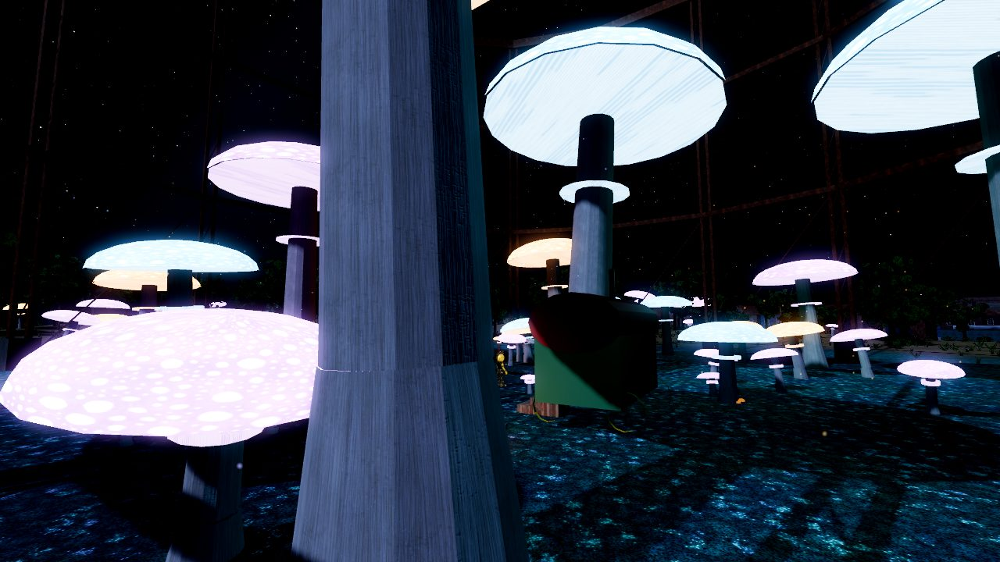
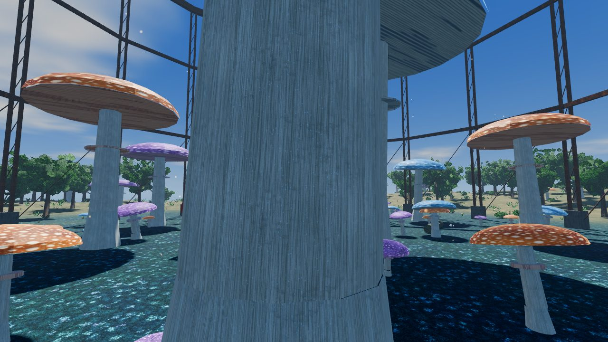
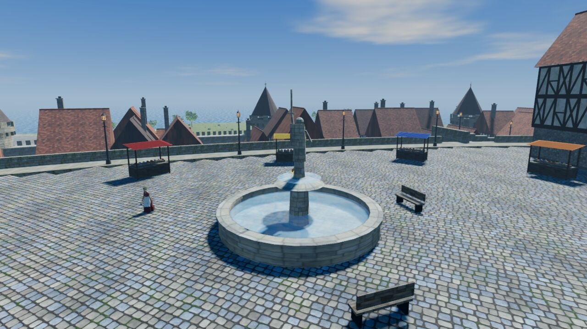
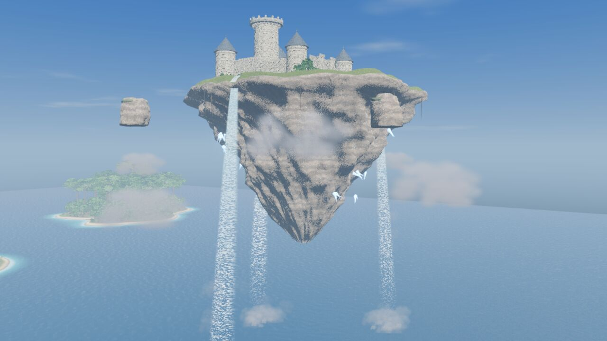
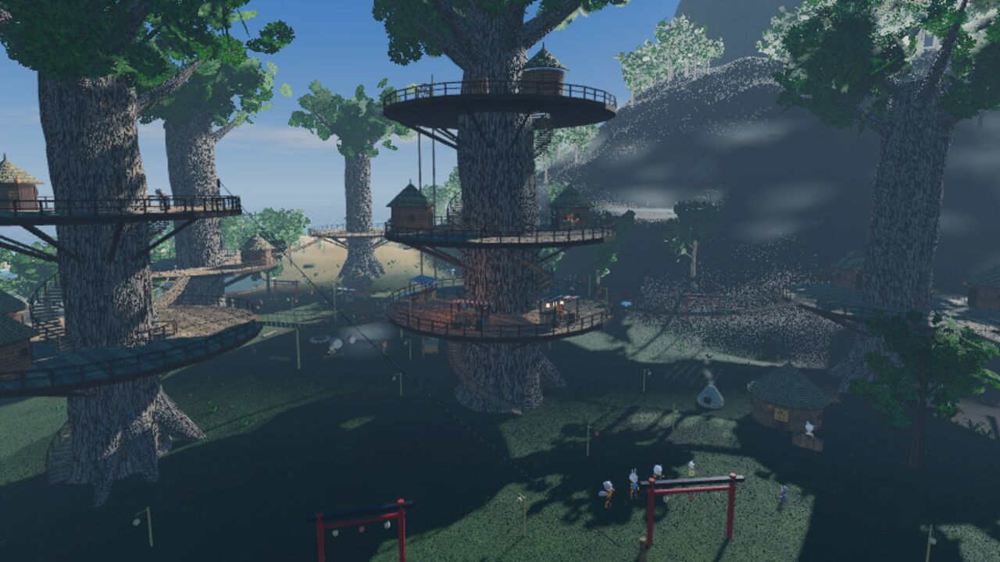
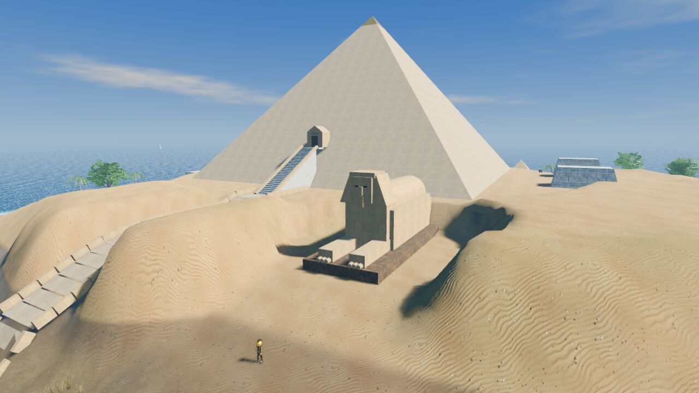
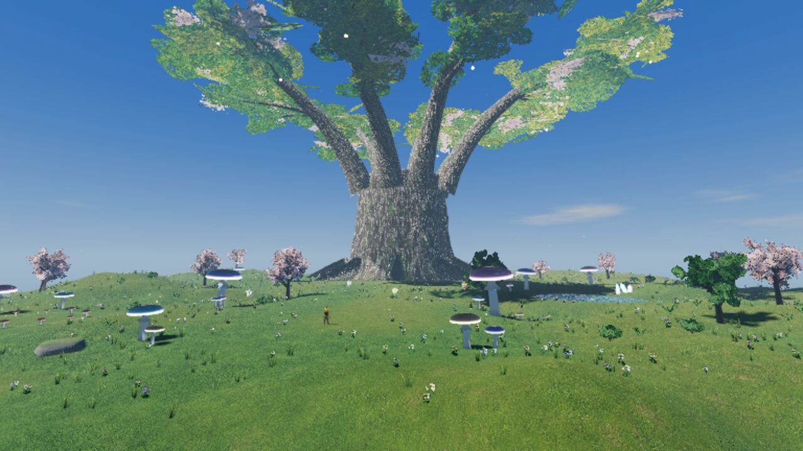
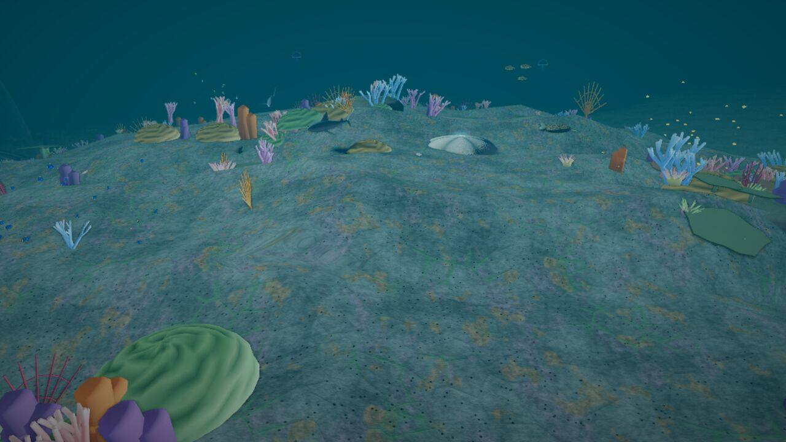
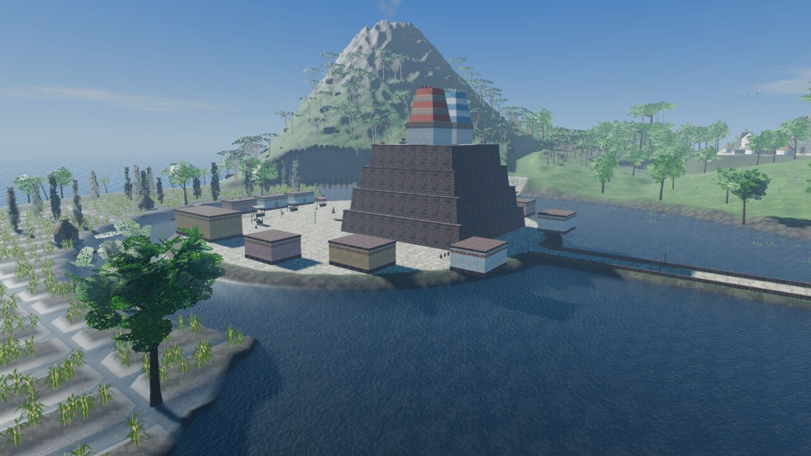
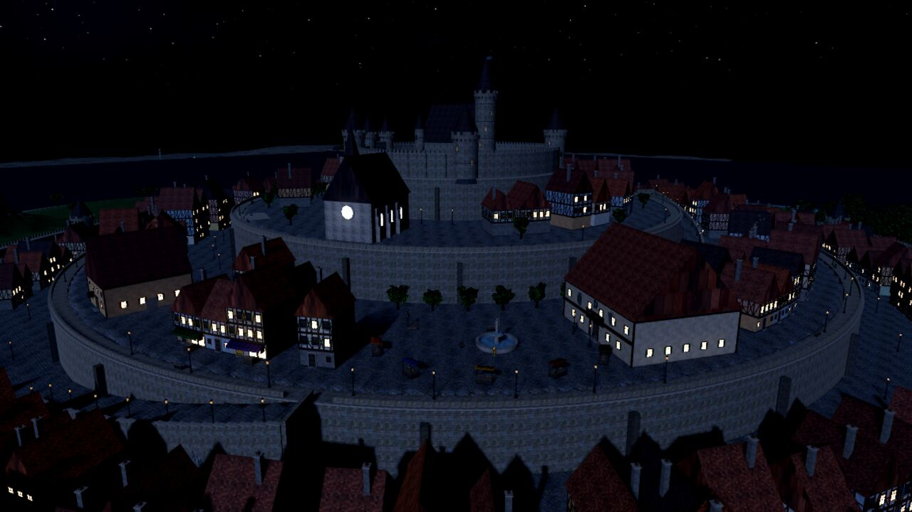
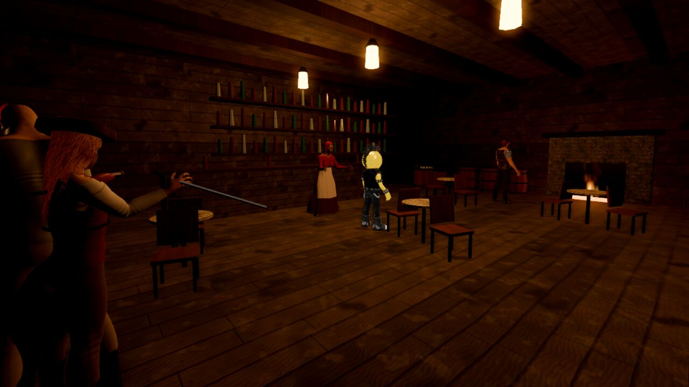
Les mondes
Un aperçu de ce qui t'attend, sans trop en dévoiler.
L'île du villageLe point de départ : un hameau, une plage, une barque, et un temple oublié sous terre.
Le Bois-DoréUn village d'elfes dans une forêt d'arbres géants, un arbre sacré à sauver.
La Montagne de FeuForgefer, la cité des nains, ses forges et ses golems.
L'île flottanteAccessible seulement à dos d'aigle : une citadelle, des gargouilles et un boss.
L'AtlantideUne cité sous un dôme, au fond de l'océan, entre requins, méduses et baleines.
Le royaume des féesDes lucioles, des esprits, une reine, et l'arbre-monde Yggdrasil.
Port-AzurUne ville portuaire pleine de vie, sa mairie, son ferry et ses commerçants.
La grande île de l'estCarène, Tazira, Cliquetis la ville des inventeurs, Ramure dans les arbres.
ArcanelleLe bourg des magiciens : académie, duels, observatoire et lac miroir.
La BalafreLe repaire des pirates, ses tavernes, ses bagarres et son marais.
L'Île des Trois SoleilsPyramides, cités mayas et aztèques, et trois grands donjons.
L'Île de BraisePandémonia, la cité des démons (gentils), son arène et ses Neuf Cercles.
L'Île de MontjoieLa ville des aventuriers, sa Guilde, ses compagnons et le Donjon des Mille Marches.
L'Île du BoucanPort-Boucan, la ville libre des punks : squats, concerts, champignons féeriques et l'Usine Grise.
Jouer
Télécharge l'EXE de ton choix sur la page Releases et lance-le : rien à installer. Windows peut afficher un avertissement la première fois (« Informations complémentaires », puis « Exécuter quand même »).
🖥️ Version PC
- ZQSD
- marcher (ou flèches)
- Maj
- courir
- Espace
- sauter, grimper
- Ctrl
- roulade
- Clic gauche
- frapper
- F
- parer
- Clic droit
- tourner la caméra
- E
- parler, ouvrir, ramasser
- I
- carnet et inventaire
- G
- appeler l'aigle
- Échap
- menu et sauvegardes
🎮 Version PC à la manette
- Stick gauche
- marcher (en douceur ou à fond)
- Stick droit
- tourner la caméra, zoomer
- A / B
- sauter / roulade
- X / Y
- frapper / parler, ouvrir
- LB / RB
- parer / courir
- LT / RT
- pouvoir du sceau / sort
- Croix
- aigle, téléportation, changer de pouvoir ou de sort
- Start / Select
- menu / carnet
Xbox, PlayStation, Switch Pro, 8BitDo… Dans les menus, un curseur doré : croix ou stick pour viser, A pour choisir, B pour revenir.
🥽 Version VR
- Stick gauche
- marcher
- Stick droit
- tourner
- A
- sauter, se hisser
- Y
- inventaire
- X
- appeler l'aigle
- Gâchette
- interagir
- Geste
- frapper à l'épée
- ≡
- menu
Casque relié au PC par Quest Link, Air Link ou SteamVR.
⚙️ Configuration conseillée
- Système
- Windows 10 ou 11, 64 bits
- Carte graphique
- RTX 3060 minimum, RTX 4070 ou mieux conseillée
- Mémoire
- 16 Go
- Sauvegardes
- 6 emplacements et une sauvegarde automatique, communs au PC et à la VR